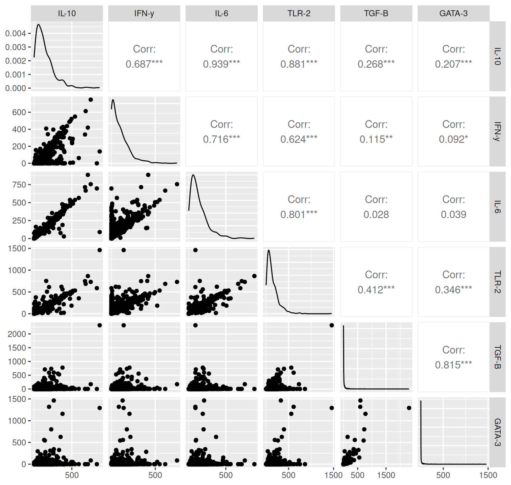

3 Immunity
3.1 Genetic correlations
First, let’s look at how the genetic traits are correlated with each other. Figure 3.1 shows that the genetic traits are nearly all significantly intercorrelated (the lone exception being TGF-B and IL-6, which are uncorrelated). Notably, the resistance traits (IL-10, IFN-y, IL-6, TLR-2) are most strongly correlated with each other and, similarly, the tolerance traits (TGF-B and GATA-3) are most strongly correlated with each each other. Both TGF-B and GATA-3 appear to be zero inflated and all the genetic traits are highly right-skewed (i.e., many low values).

Figure 3.1: Correlations among genetic expression traits. IL-10, IFN-y, IL-6, and TLR-2 are thought to be resistance-associated genes and TGF-B and GATA-3 are throught to be tolerance-associated.
3.2 PCA
The resistance and tolerance genetic traits also broadly group together in a principal component analysis (PCA; Figure 3.2), with “resistance” expression aligning with the first principal component (PC) and “tolerance” expression aligning with the second PC. Overall, these first two PCs explain 87% of the variation among the genetic expression varaibles (Table 3.1). It also appears that Borrelia infection status is not strongly associated with either resistance or tolerance, but Borrelia burden may be associated with tolerance expression (Figure Figure 3.2, blue lines).

Figure 3.2: Principal component analysis of genetic expression traits. Traits were log(x+1) transformed prior to the analysis.
| PC1 | PC2 | PC3 | PC4 | PC5 | PC6 | |
|---|---|---|---|---|---|---|
| Eigenvalue | 3.52 | 1.73 | 0.40 | 0.20 | 0.12 | 0.03 |
| Proportion Explained | 0.59 | 0.29 | 0.07 | 0.03 | 0.02 | 0.00 |
| Cumulative Proportion | 0.59 | 0.87 | 0.94 | 0.97 | 1.00 | 1.00 |
| variable | PC1 | PC2 | type | perms | rsquared | pvals |
|---|---|---|---|---|---|---|
| Bb_burden | 0.28 | 0.96 | vector | 999 | 0.07 | 0.01 |
| Bb_statusNegative | -0.02 | -0.04 | factor | 999 | 0.01 | 0.02 |
| Bb_statusPositive | 0.03 | 0.05 | factor | 999 | 0.01 | 0.02 |
Multivariate regression of burden and infection against the first two genetic expression PCs implies that only infection status is significantly associated with the resistance-tolerance PCs (3.3). This approach is admittedly simplistic, since we aren’t accounting for spatial or temporal varation. These relationships will be assessed more vigorously in later sections.
| Response | Predictor | Coef | SE | t | P | r-squared |
|---|---|---|---|---|---|---|
| Bb_infected | (Intercept) | 3.04 | 0.62 | 4.88 | 0.02 | 0.88 |
| Bb_infected | expr_PC1 | 15.60 | 3.39 | 4.60 | 0.02 | 0.88 |
| Bb_burden | (Intercept) | 1.03 | 1.68 | 0.61 | 0.59 | 0.01 |
| Bb_burden | expr_PC1 | 1.52 | 9.17 | 0.17 | 0.88 | 0.01 |